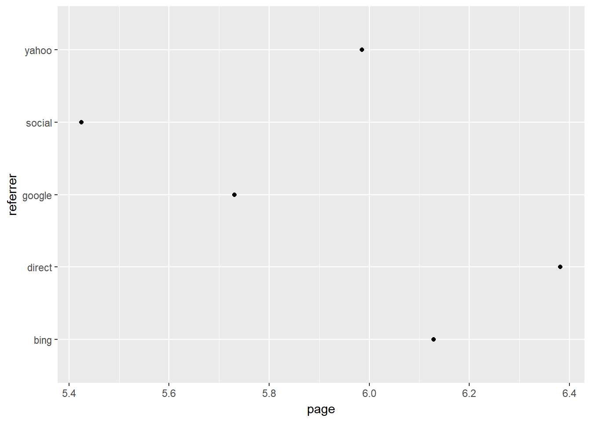
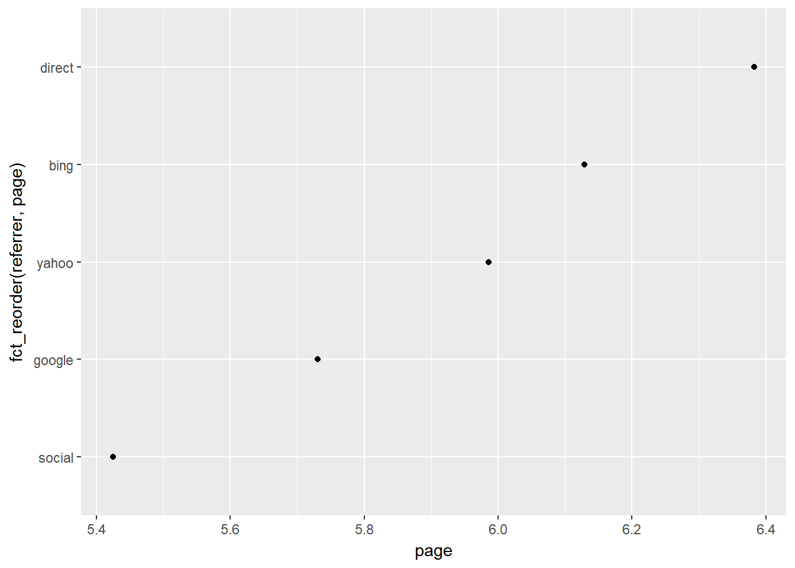
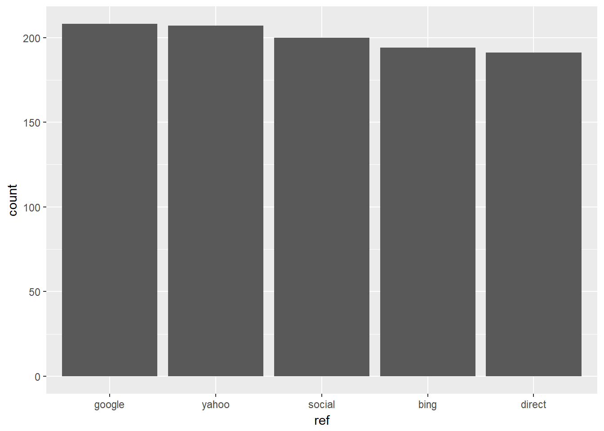
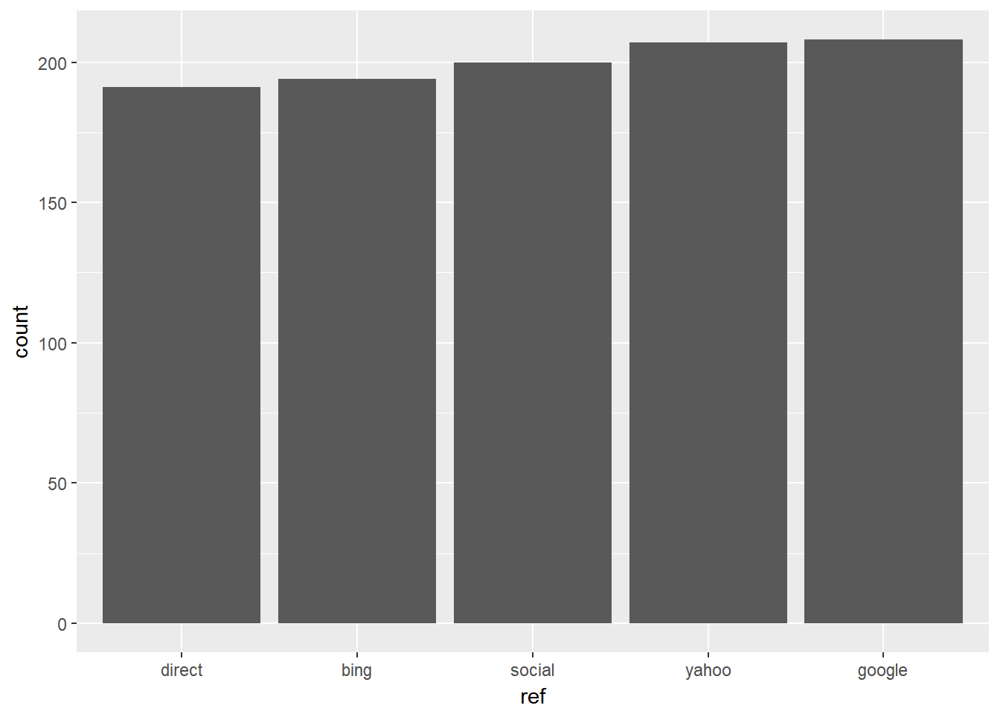

Introduction
This is the 12th post in the series Data Wrangling with R. In the previous post, we learnt to manipulate strings using the stringr package. In this post, we will learn to work with categorical/qualitative data in R using forcats. Let us begin by installing and loading forcats and a set of other pacakges we will be using.
We will use a case study to explore the various features of the forcats package. You can download the data for the case study from here or directly import the data using the readr package.
ecom <- readr::read_csv('https://raw.githubusercontent.com/rsquaredacademy/datasets/master/web.csv')
ecom## # A tibble: 1,000 x 11
## id referrer device bouncers n_visit n_pages duration country
## <int> <chr> <chr> <chr> <int> <dbl> <dbl> <chr>
## 1 1 google laptop true 10 1 693 Czech Republic
## 2 2 yahoo tablet true 9 1 459 Yemen
## 3 3 direct laptop true 0 1 996 Brazil
## 4 4 bing tablet false 3 18 468 China
## 5 5 yahoo mobile true 9 1 955 Poland
## 6 6 yahoo laptop false 5 5 135 South Africa
## 7 7 yahoo mobile true 10 1 75 Bangladesh
## 8 8 direct mobile true 10 1 908 Indonesia
## 9 9 bing mobile false 3 19 209 Netherlands
## 10 10 google mobile true 6 1 208 Czech Republic
## # ... with 990 more rows, and 3 more variables: purchase <chr>,
## # order_items <dbl>, order_value <dbl>We will do the following in this case study:
- compute the frequency of different referrers
- plot average number of pages browsed for different referrers
- collapse referrers with low sample size into a single group
- club traffic from social media websites into a new category
- group referrers with traffic below a threshold into a single category
ecom %>%
count(referrer)## # A tibble: 5 x 2
## referrer n
## <chr> <int>
## 1 bing 194
## 2 direct 191
## 3 google 208
## 4 social 200
## 5 yahoo 207refer_summary <- ecom %>%
group_by(referrer) %>%
summarise(
page = mean(n_pages),
tos = mean(duration),
n = n()
)
ggplot(refer_summary, aes(page, referrer)) + geom_point()
ggplot(refer_summary, aes(page, fct_reorder(referrer, page))) + geom_point()
ecom %>%
mutate(ref = referrer %>% fct_infreq()) %>%
ggplot(aes(ref)) +
geom_bar()
ecom %>%
mutate(ref = referrer %>% fct_infreq() %>% fct_rev()) %>%
ggplot(aes(ref)) +
geom_bar()
traffic <- readr::read_csv('https://raw.githubusercontent.com/rsquaredacademy/datasets/master/web_traffic.csv')
traffic## # A tibble: 48,232 x 1
## traffics
## <chr>
## 1 google
## 2 google
## 3 google
## 4 google
## 5 google
## 6 google
## 7 google
## 8 google
## 9 google
## 10 google
## # ... with 48,222 more rowstraffic$traffics %>% fct_count()## # A tibble: 9 x 2
## f n
## <fctr> <int>
## 1 affiliates 7641
## 2 bing 5893
## 3 direct 1350
## 4 facebook 8135
## 5 google 9229
## 6 instagram 3907
## 7 twitter 4521
## 8 unknown 2657
## 9 yahoo 4899traffic2 <- fct_collapse(traffic$traffics,
social = c("facebook", "twitter", "instagram"),
search = c("google", "bing", "yahoo")
)
traffic2 %>% fct_count() ## # A tibble: 5 x 2
## f n
## <fctr> <int>
## 1 affiliates 7641
## 2 search 20021
## 3 direct 1350
## 4 social 16563
## 5 unknown 2657traffic$traffics %>% fct_lump() %>% table()## .
## affiliates bing facebook google instagram twitter
## 7641 5893 8135 9229 3907 4521
## unknown yahoo Other
## 2657 4899 1350traffic$traffics %>% fct_lump(n = 3) %>% table()## .
## affiliates facebook google Other
## 7641 8135 9229 23227traffic$traffics %>% fct_lump(prop = 0.1) %>% table()## .
## affiliates bing facebook google yahoo Other
## 7641 5893 8135 9229 4899 12435traffic$traffics %>% fct_lump(prop = 0.15) %>% table()## .
## affiliates facebook google Other
## 7641 8135 9229 23227traffic$traffics %>% fct_lump(n = -3) %>% table()## .
## direct instagram unknown Other
## 1350 3907 2657 40318traffic$traffics %>% fct_lump(prop = -0.1) %>% table()## .
## direct instagram twitter unknown Other
## 1350 3907 4521 2657 35797